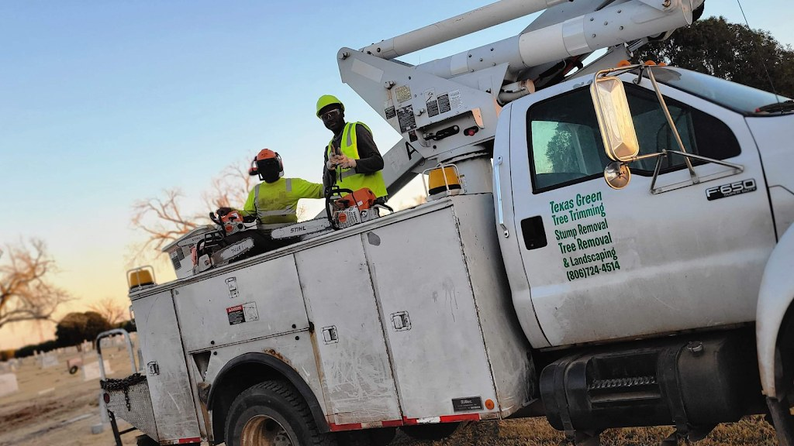
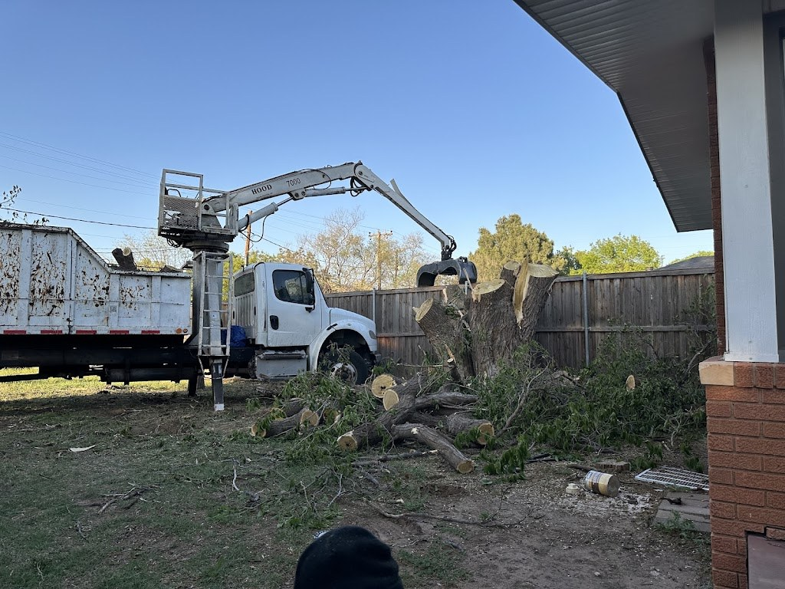
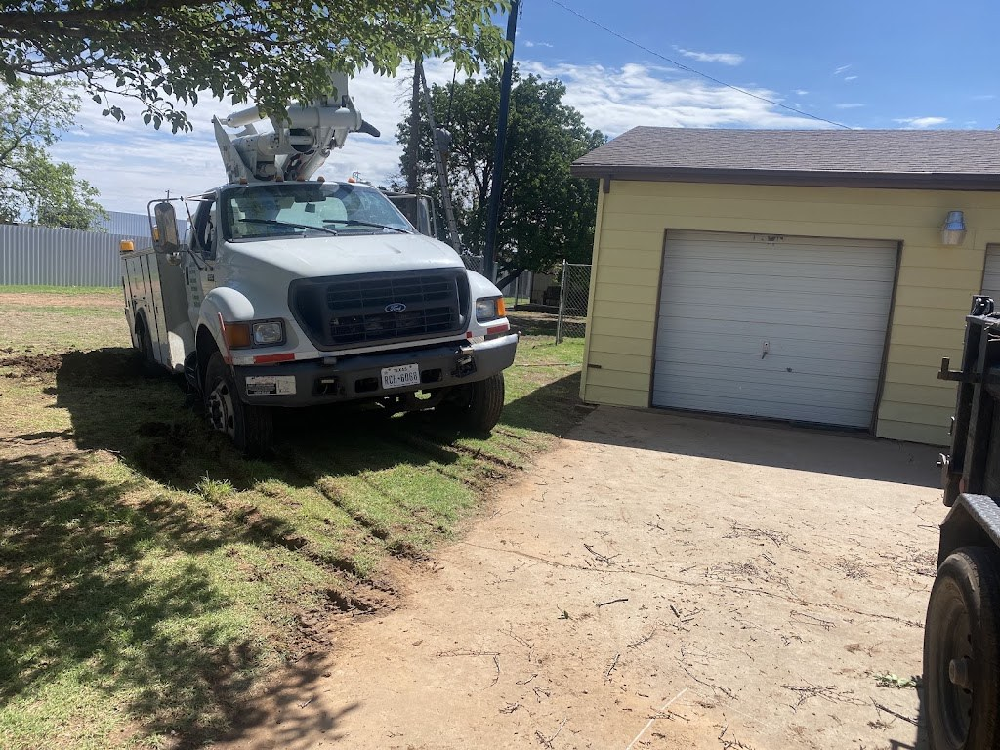

Tree and landscape services at Texas Green Tree & Landscape
Tree trimming, tree removal, stump removal, and landscaping in Lubbock, with certified arborists, free estimates, and military and senior discounts.
Tree trimming
Tree removal
Stump removal and grinding
Landscaping
Certified arborists
Certified arborists on the team.
Free estimates
Estimates are free.
Military and senior discounts
Military and senior discounts are available.
Service area
Serves the Lubbock, Dallas, Houston, and Midland areas.
Gallery



All three photos are the business's own public photos from its Google Maps listing. They show the bucket truck crew, the grapple truck at work, and a truck by a garage.
Contact
Texas Green Tree & Landscape serves Lubbock, TX. Questions? Call (806) 724-4514.